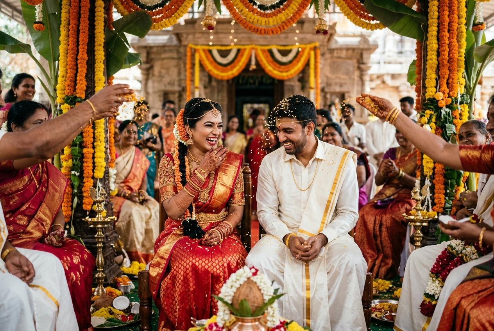

THE MASTER BEHIND THE LENS
Preserving South India’s Soul For 30+ Glorious Years.
Founded by Cherry, our studio began with analogue film cameras in Narasaraopeta and has evolved into one of Andhra Pradesh’s most sought-after wedding cinema and event arrangement studios.
We believe that photographs should not merely show how a wedding looked—they must revive exactly how it felt. From the tender tears of Kanyadanam to the thunderous bass of a Sangeet party, our craft is dedicated to generations of families.
30+
Years Experience
1,500+
Weddings Filmed
100%
Telugu Traditions Honored
